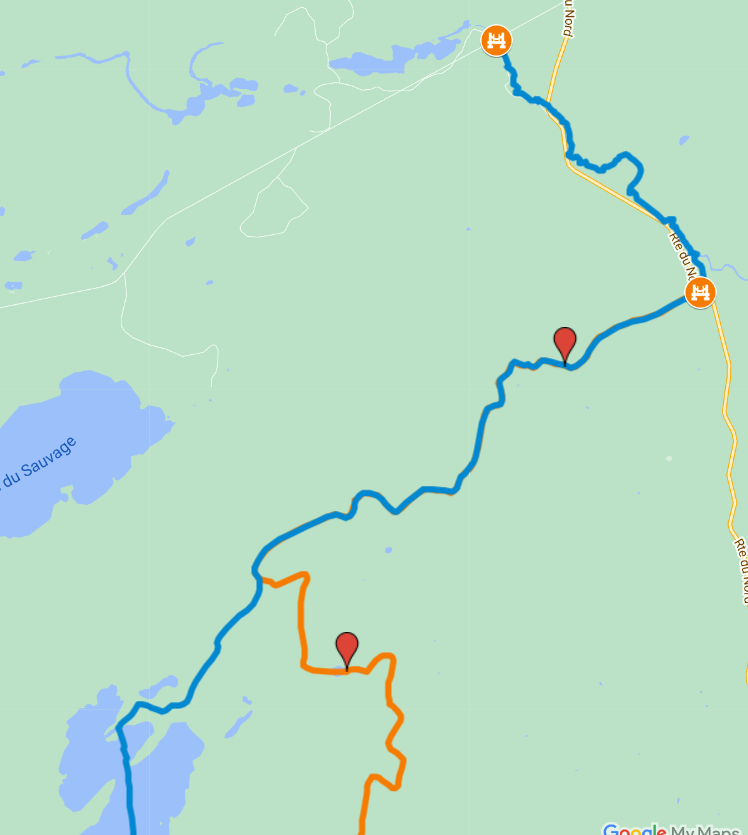

Powered by Google MyMaps, this interactive card marks the locations of water access points, paths, and a few points of interests.
You can click on a symbol to gain additional information about the marked item.
This information can assist you in the preparation of your expedition and locating key landmarks.
Map example
The database
With the wide selection of lakes across the area, finding one to start your adventure on will never be a problem!
As accessibility varies from one location to the other, it is important to review information about possible routes, available space for parking and understanding how to get in the water safely.
With the use of my GPS device, I have compiled a list of suggested routes which were added to this map. For clarity, each route was mapped with a different colour. The colour does not correlate to the difficulty of each route.
Discover the region at 5 km/h
I have as much fun while paddling through the water as I do taking pictures and mapping the area with my GPS. Coming across a small waterfall or a creek, witnessing a great heron take flight or closing my eyes to enjoy the loon`s call brings me great joy. Discovering a new lake and exploring it is my type of adventure. Happy rowing!
Please do not hesitate to submit your trails and pictures to be added to the map!